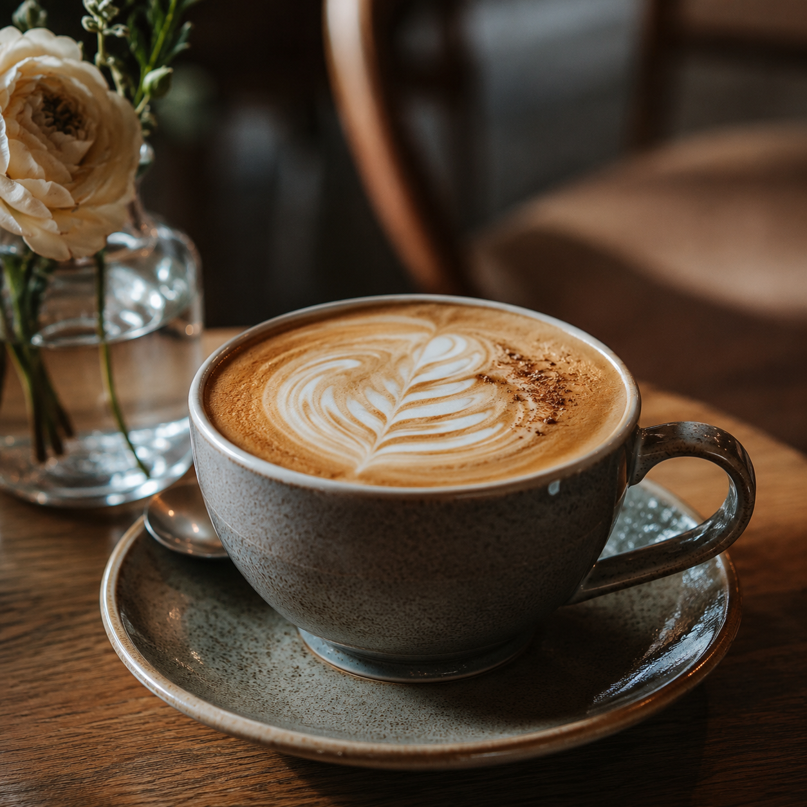
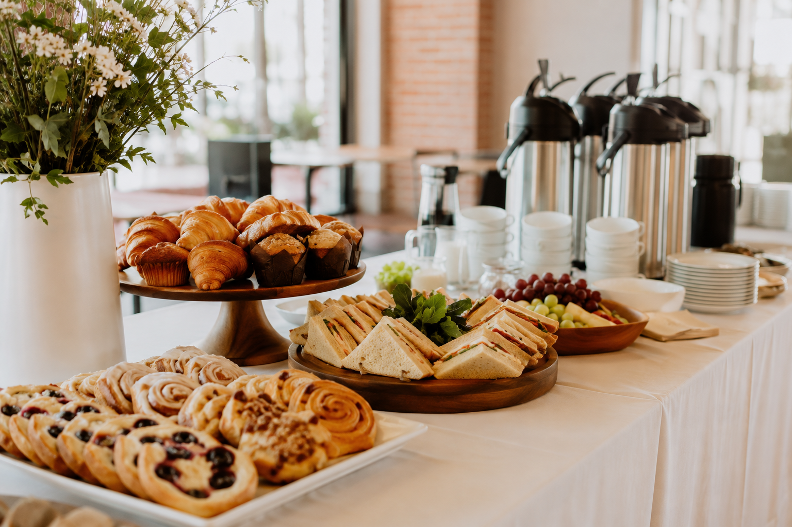
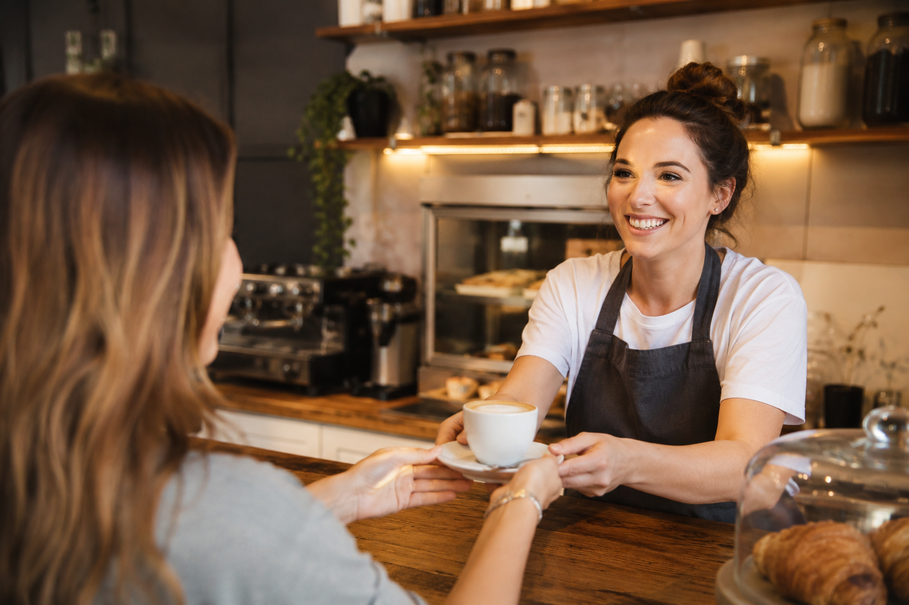

Seasonal Brunch
Fresh plated favorites for dine-in and weekend visitors.
$12+
A premium food-business experience with menu highlights, reservation inquiry, catering leads, message handoff, and visual storytelling.

A restaurant page should not feel like a PDF. It should make the food, mood, and next step instantly obvious.
Fresh plated favorites for dine-in and weekend visitors.

Latte, espresso, cold brew, and house specials.

Small events, office platters, and coffee service.

Atmosphere, staff, food, and contact flow all work together. The page supports bookings, catering requests, and daily inquiries without feeling crowded.
Click through the gallery to show how a restaurant page can make the location, experience, and food feel premium.

Inquiry received. The request can notify the cafe and save the details.
The design avoids cheap coupon-page energy and focuses on appetite, atmosphere, and direct conversion.
Back to portfolio